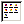

|  | TAListView |
Creates a listview control on the form.
| Properties: | |
| Align | This is a design only property and will not generate any code. It helps to keep controls alignment while editing. |
| Color | This property define control background color. |
| Columns | Contain ListView header captions (for use in report style). |
| ContextMenu | Allow to attach a ContextMenu to the control. ContextMenu must be created first. |
| Cursor | This property define what cursor will be showed when mouse over the control. |
| Enabled | This is True by default. Set it to False to generate disabled control. This will add GUICtrlSetState(-1, $GUI_DISABLE) line. |
| Font | This property allow to set font properties - color, font face, size and bold/italic/underline/strikeout attributes. |
| Left,Top | Position of control relative to it's parent. |
| Width,Height | Size of control in pixels. |
| Hint | This property containing text that will appear when mouse cursor is over control. This will add GUICtrlSetTip(-1, "Your hint text") line. |
| Images | An attached ImageList control. This is an icons of list items. |
| Items | This property contains control items list. This will open ListView editor. |
| Name | Unique name of control, this defines the name of variable where control ID will be kept. It also can be empty, when no variable will be created. |
| OnClick | Standard control event. |
| Resizing | This property define contol resizing. |
| TabOrder | This property define in which order controls will be created. This is meaningful when you want switch between controls with Tab key. You also can use TabOrder Visual Editor. Tab order starts from 0. |
| Visible | This is True by default. Set it to False to generate hidden control. This will add GUICtrlSetState(-1, $GUI_HIDE) line. |
Each column has its own properties:
| Individual Column Properties: | |
| Alignment | Alignment of header text 1) |
| Caption | This property contain column header text. |
| Width | Width of column. You also can use two special values: -1: column width will be automatically set to maximum text width -2: column width will be automatically set to column header text width |
None.
None.